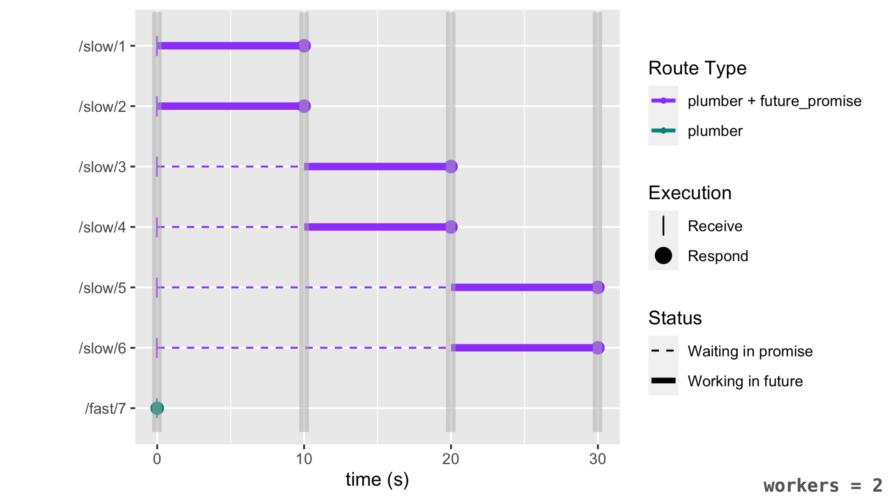

Advanced future and promises usage
Source:vignettes/promises_05b_future_promise.Rmd
promises_05b_future_promise.RmdThis article discusses the benefits of using
promises::future_promise() over a combination of
future::future() + promises::promise() to
better take advantage of computing resources available to your main R
session. To demonstrate these benefits, we’ll walk-through a use-case
with the plumber package. (See here to learn more about
plumber and the
previous article to learn more about future.)
The problem with future()+promise()
In an ideal situation, the number of available future
workers (future::nbrOfFreeWorkers()) is always
more than the number of future::future()
jobs. However, if a future job is attempted when
the number of free workers is 0, then future
will block the current R session until one becomes available.
For a concrete example, let’s imagine a scenario, where seven
plumber requests are received at the same time with only
two future workers available. Also, let’s assume the
plumber route(s) serving the first 6 requests use
future::future() and take ~10s to compute
slow_calc():
#* @get /slow/<k>
\() {
future::future({
slow_calc()
})
}Let’s also assume the plumber route serving the last
request does not use any form of future or
promises and takes almost no time to compute.
#* @get /fast/<k>
\() {
fast_calc()
}The figure below depicts the overall timeline of execution of these 7
requests under the conditions we’ve outlined above. Note that the y-axis
is ordered from first request coming in (/slow/1) to the
last request (/fast/7).

Note how R has to wait 20s before processing the 7th request (shown
in green). This is a big improvement over not using
future+promises at all (in that case, R would
have to wait 60s before processing). However, since there are only two
future workers available R still has to wait longer than
necessary to process that last request because the main R session must
wait for a future worker to become available. The video
below animates this behavior:
The solution: future_promise()
The advantage of using future_promise() over
future::future() is that even if there aren’t
future workers available, the future is
scheduled to be done when workers become available via
promises. In other words, future_promise()
ensures the main R thread isn’t blocked when a future job
is requested and can’t immediately perform the work (i.e., the number of
jobs exceeds the number of workers).
Continuing with the example above, we can swap out the calls to
future::future() with future_promise().
#* @get /slow/<k>
\() {
promises::future_promise({
slow_calc()
})
}With this change to future_promise(), note how the
/fast/7 route now does not have to wait on
future work to finish processing. Therefore,
plumber can complete the last requests almost
immediately:

The vertical gray bars in the figure above represent timepoints where
the main R session is actually busy. Outside of these gray areas, the R
session is free to do other things, for example, executing other
promises or, more generally, non-future work.
The video below animates this behavior: